Prima engleză a copilului, de la primul cuvânt la prima conversație.
Un curs complet, în șaptezeci și cinci de unități ilustrate — cuvinte, sunete, gramatică, povești, citit, scris, matematică și conversații adevărate — predat de o voce britanică prietenoasă, cu explicații în limba familiei.
Se descarcă gratuit, pentru iPhone și iPad. Unitatea 1 din Nivelul 1 rămâne gratuită pentru totdeauna.
- Fără reclame
- Fără abonament
- Funcționează fără internet
- Nu se colectează nimic, de la nimeni
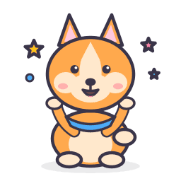
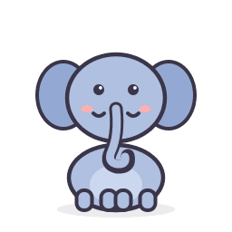
Iată ce va vedea copilul.
Patru ecrane din aplicație, exact așa cum apar în App Store.
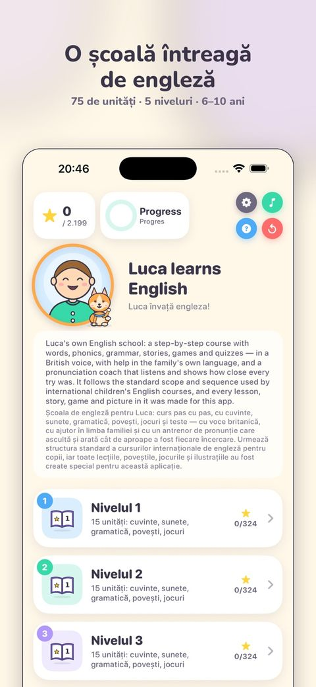
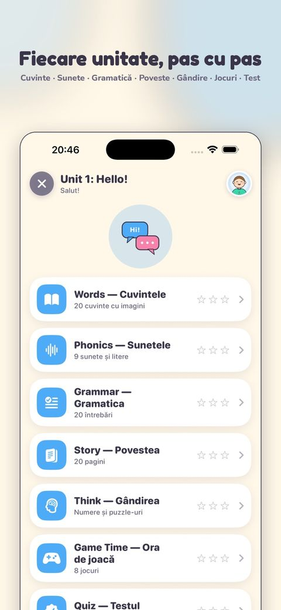
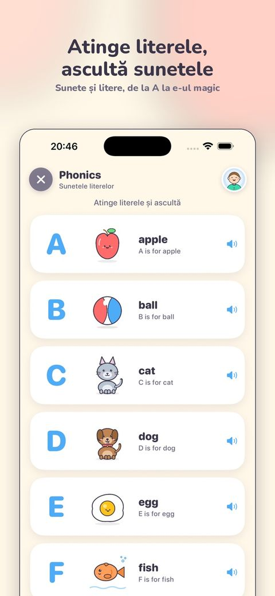
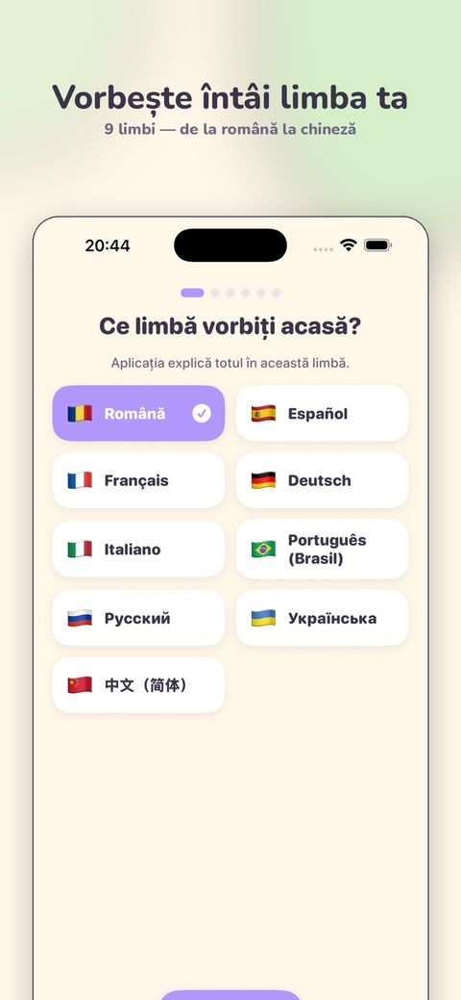
552 de ilustrații, iar fiecare cuvânt apare și în limba familiei.
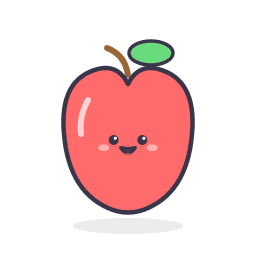
applemărROMÂNĂ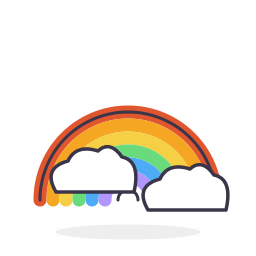
rainbowl'arc-en-cielFRANÇAIS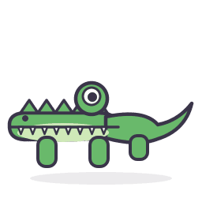
crocodiledas KrokodilDEUTSCH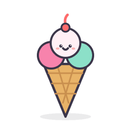
ice creamil gelatoITALIANO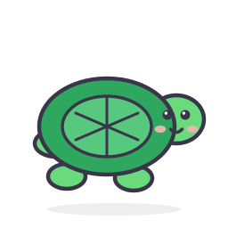
turtlea tartarugaPORTUGUÊS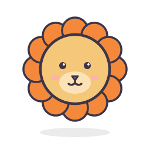
lionлевРУССКИЙ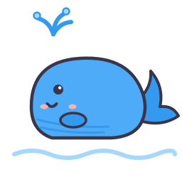
whaleкитУКРАЇНСЬКА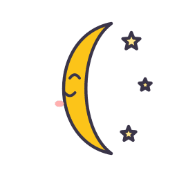
moon月亮中文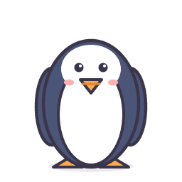
penguinel pingüinoESPAÑOL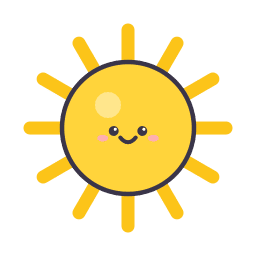
sunle soleilFRANÇAISUn curs adevărat, nu un teanc de cartonașe.
Cinci niveluri a câte cincisprezece unități, care urmează progresia folosită de cursurile internaționale de engleză pentru copii — de la primele cuvinte până la citit și scris de nivel A2. Fiecare unitate este o mică lecție cu aceeași formă prietenoasă, astfel încât copilul știe mereu unde se află și ce urmează.
- 1 · Cuvintele20 de cuvinte ilustrate, rostite și exersate
- 2 · Sunetele9 sunete și litere, până la „e-ul magic”
- 3 · Gramatica20 de întrebări care predau tiparul unității
- 4 · PovesteaO poveste ilustrată de 20 de pagini, de citit și de ascultat
- 5 · Gândirea10 exerciții de calcul și 10 puzzle-uri pe imaginile unității
- 6 · Ora de joacăOpt jocuri cu cuvintele unității
- 7 · TestulZece întrebări, trei stele și, poate, o medalie
Salutul, jucăriile, corpul meu, familia, mâncarea preferată — și primele conversații.
Sentimentele, zilele și vremea, orașul meu, ferma, grădina zoologică, la cumpărături.
Trecutul și viitorul, comparațiile, ceasul, anotimpurile — povești cu final neașteptat.
Țara noastră, munți și râuri, vremea din lume, cum găsim drumul.
Cele șapte continente, orașele, spațiul, grija față de natură — și cum ne luăm rămas-bun în engleză.
Tot ce trebuie să aibă un prim curs de engleză, plus câteva lucruri pe care altele nu le au.
Spune cu voce tare
Copilul atinge microfonul de pe orice cartonaș sau pagină de poveste, repetă ce a auzit, iar un cerc se umple cu scorul. Ascultarea are loc doar pe dispozitiv. Nimic nu se înregistrează și nimic nu pleacă nicăieri.
Întâi limba familiei, apoi engleza
Fiecare indicație, pagină de poveste și întrebare urmează limba pe care o alegeți, iar aplicația spune totul întâi în limba dumneavoastră și apoi în engleză. Sau invers. Sau doar în engleză, când copilul este pregătit.
Cincisprezece conversații adevărate
În unitățile de conversație, o scenă se joacă pe două voci. Apoi rolurile se schimbă, iar copilul își spune replicile cu voce tare, în timp ce aplicația joacă celălalt rol.
Cititul — o poveste citită singur
De la Nivelul 4, copilul citește singur cinci paragrafe, apoi răspunde la cinci întrebări despre ce s-a întâmplat. Primii pași, liniștiți și mândri, ai cititului adevărat.
Scrisul — propoziții adevărate, la tastatură
Pasul Scrisul cere propoziții întregi, scrise la tastatură, și le verifică cuvânt cu cuvânt. Copilul vede exact ce cuvinte au ieșit bine și care mai cer o privire.
Gândirea — matematică și logică, în engleză
După fiecare poveste urmează zece exerciții de calcul, numărate pe imaginile unității, și zece puzzle-uri: ce urmează în șir, care nu se potrivește. De la numărat până la zece se ajunge la calcule până la o sută.
Zece feluri de jocuri
Perechi, Ascultă și atinge, Construiește cuvântul, Construiește propoziția, Sparge balonul, Cine nu se potrivește, Litera lipsă, Adevărat sau fals, Sortează cuvintele și Testul. La 90% sosește medalia de aur, cu confetti.
Geografie care știe de unde sunteți
Nivelurile 4 și 5 predau țări, râuri, continente și drumul spre casă, iar întrebările urmează limba aleasă. Dacă alegeți franceza, copilul este întrebat despre Franța și Paris.
Chiar copilul dumneavoastră, în aplicație
Scrieți un nume și alegeți o poză, iar amândouă apar peste tot: pe ecranul principal, în jocuri, în povești și la festivitatea medaliei. Poza nu părăsește niciodată dispozitivul.
Un raport de învățare pentru părinți
O atingere pe inelul verde arată cât s-a învățat, câte zile la rând a exersat copilul și câte o bară pentru fiecare deprindere. Vedeți imediat ce merge bine și ce mai are nevoie de o repetare.
Douăsprezece lumi Bonus
Teme de joacă liberă, pe lângă curs: alfabetul și sunetele, numerele, culorile, animalele, mâncarea, salutul, lunile și zilele, familia și corpul, lucrurile de la școală, acțiunile, vremea și hainele.
2.199 de stele de colecționat
Fiecare pas valorează până la trei stele, iar fiecare scor foarte bun aduce o medalie de aur. Progresul se salvează pe dispozitiv. Orice pas poate fi refăcut oricând, iar cel mai bun rezultat rămâne.
Vorbește întâi limba familiei.
Primul ecran întreabă ce limbă se vorbește în familie, iar de acolo totul o urmează: fiecare indicație, fiecare pagină de poveste, fiecare ecran pentru părinți și a doua voce. Toate cele 517 cuvinte, cele 491 de propoziții-exemplu și fiecare rând din fiecare poveste sunt traduse în toate cele nouă limbi.
Făcută ca să i se poată încredința un copil.
- Fără reclame, nicăieri și niciodată
- Fără conturi și fără autentificare
- Fără statistici și fără urmărire: nu se colectează nimic
- Fără legături în afara aplicației
- Lecțiile și jocurile merg fără internet
- Microfonul poate fi oprit complet
- Vorbirea este înțeleasă doar pe dispozitiv
- Poza rămâne în folderul privat al aplicației
O singură plată, în spatele unei întrebări pentru adulți
Cursul complet costă 199,99 lei în România, 39,99 USD în Republica Moldova și 39,99 € în zona euro. Se plătește o singură dată și nu se reînnoiește niciodată. Un copil care atinge un lacăt este trimis să cheme un adult: nu vede niciun preț și niciun buton de cumpărare. Ecranul pentru părinți apare abia după o întrebare de înmulțire scrisă în cuvinte, conform regulilor Apple pentru aplicațiile destinate copiilor.
Câteva cuvinte despre voce
Aplicația folosește vocea britanică a dispozitivului, iar limba familiei este a doua voce. Puteți încetini vorbirea, schimba ordinea sau opri a doua voce. Aplicația crește odată cu copilul.
Încercați gratuit o unitate întreagă. O singură plată deschide tot cursul.
Nivelul 1, Unitatea 1 — unitatea întreagă
Nu o mostră, ci toți pașii unei unități adevărate, oricât timp doriți:
- 20 de cuvinte ilustrate, rostite și jucate
- 9 sunete și litere
- 20 de întrebări de gramatică
- O poveste ilustrată de 20 de pagini
- 10 exerciții de calcul și 10 puzzle-uri
- Opt jocuri și testul
- Antrenorul de pronunție
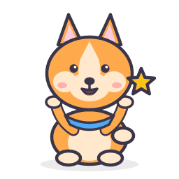
O singură plată · pentru totdeaunaCursul complet
Totul, pe fiecare dispozitiv conectat la contul dumneavoastră Apple:
- Toate cele 75 de unități, din toate cele cinci niveluri
- Toate cele 12 lumi Bonus
- Toate cele 15 conversații
- Cititul și Scrisul, la Nivelurile 4 și 5
- Toate jocurile, toate poveștile, toate cele 2.199 de stele
- Nu este abonament și nu se reînnoiește niciodată
199,99 lei în România · 39,99 USD în Republica Moldova · 39,99 € în zona euro · 34,99 £ în Marea Britanie. App Store afișează întotdeauna prețul în moneda dumneavoastră, iar acela este prețul valabil. Cumpărat o dată, restabilit gratuit pe un dispozitiv nou. Prețuri verificate la 5 noiembrie 2026.
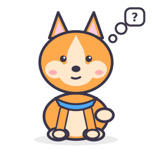
Întrebări pe care le pun părinții
Este abonament?
Nu. Aplicația se descarcă gratuit, Unitatea 1 din Nivelul 1 rămâne gratuită pentru totdeauna, iar o singură plată deschide tot restul. Plata nu se reînnoiește niciodată și poate fi restabilită gratuit pe orice dispozitiv conectat la același cont Apple.
Cât costă cursul complet?
199,99 lei în România, 39,99 USD în Republica Moldova și 39,99 € în zona euro. Se plătește o singură dată, pentru toate cele șaptezeci și cinci de unități, cele douăsprezece lumi Bonus, toate poveștile, jocurile și conversațiile, pe iPhone și pe iPad. App Store afișează prețul în moneda dumneavoastră, iar un dispozitiv nou nu costă nimic: „Restore purchases” readuce cursul gratuit. Nu mai este nimic altceva de cumpărat.
Cum deschid cursul complet?
Pe ecranul principal atingeți Open the whole course, apoi I am a grown-up · Sunt adult și răspundeți la întrebarea de înmulțire. Abia atunci apar prețul, butonul Unlock everything și Restore purchases. Întrebarea există pentru că aplicația este făcută pentru copii, iar un copil nu trebuie să ajungă singur la o plată.
Pentru ce vârste este?
De la șase la zece ani. Nivelul 1 nu presupune nicio cunoștință: un copil de șase ani care nu a întâlnit niciodată engleza poate începe de acolo. Nivelurile 4 și 5 înseamnă muncă adevărată de nivel A2, cu citit și scris, așa că aplicația ține pasul pe măsură ce copilul crește.
Trebuie să știe copilul să citească?
Nu. Totul este rostit cu voce tare, fiecare cuvânt are o imagine, iar pașii de sunete predau cititul de la litere până la tiparele de scriere ale propozițiilor adevărate.
Are nevoie de internet?
Doar pentru cumpărare, de care se ocupă Apple. Lecțiile, poveștile, jocurile și antrenorul de pronunție funcționează fără nicio conexiune: în avion, la bunici la țară, oriunde.
În ce limbi poate explica?
Română, spaniolă, franceză, germană, italiană, portugheză braziliană, rusă, ucraineană și chineză mandarină. Traducerea este completă: fiecare indicație, poveste, întrebare și ecran pentru părinți, plus a doua voce. Engleza este predată cu o voce britanică.
Ce colectați despre copilul meu?
Nimic, despre nimeni, la nicio vârstă. Fără conturi, fără statistici, fără reclame, fără cod al altor companii. Numele și poza pe care le adăugați rămân în folderul aplicației de pe dispozitiv, iar ce aude microfonul este înțeles pe dispozitiv și nu este niciodată păstrat sau trimis.
Pe ce dispozitive merge?
Pe iPhone și iPad cu iOS 17 sau iPadOS 17 ori cu o versiune mai nouă. Cursul este același pe amândouă. Pentru un copil, ecranul mai mare al unui iPad este mai comod.
Există și pentru Android?
Nu. Aplicația este disponibilă doar pentru iPhone și iPad.
De unde o descarc?
Din App Store. Butonul din partea de sus a paginii o deschide direct, iar aplicația apare acolo cu numele My First English for Kids. Descărcarea este gratuită. Pentru întrebări, scrieți la adrian.lupusor@gmail.com și veți primi răspuns de la un om.
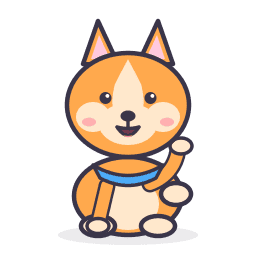
Făcută de un tată, testată de fiul lui.
Am construit acest curs pentru băiatul meu de șase ani, unitate cu unitate, așa cum mi-aș fi dorit să existe pentru el: o programă adevărată, o voce blândă, limba noastră alături de engleză și nicio reclamă. Fiecare joc din el a fost aprobat de un băiețel foarte sincer. — Adrian, Chișinău, Republica Moldova
Acum în App Store, pentru iPhone și iPad.
Descărcarea este gratuită. Jucați toată Unitatea 1 oricât doriți, apoi decideți.
Descărcați din App StoreNecesită iOS 17 sau iPadOS 17 ori o versiune mai nouă.